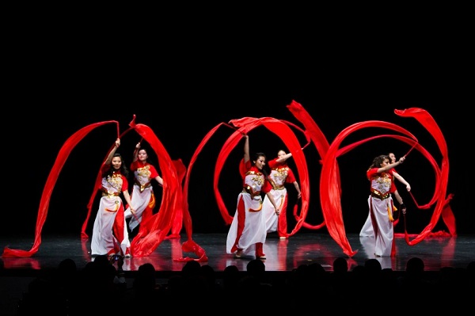

Each year, Amber Dance Troupe has a showcase where we show off all the hardwork that we have put into our dances.
 Source: Amber Dance Troupe
Source: Amber Dance Troupe
The 2018 Rhythm of China event,displayed our talent and spread the culture of China.Rhythms of Asia is an annual showcase hosted by Illuminations Dance Troupe and Amber Dance Troupe. Various kinds of Chinese traditional dance, including Sword, Hankie, Ribbon and more, will be performed during these exciting two hours. In addition, we've invited Cornell Wushu, Cornell Lion Dance, and Ithaca children to join the show to add more diversity and raise community awareness of traditional Chinese dance! A portion of the proceeds for this event will be donated to Project Hope at Cornell to help provide resources and educational support for school children in rural China. Please come and support our group of wonderful and talented dancers!
Dazzling costumes. Fierce techniques. Beautiful dances. Illuminations Dance Troupe and Amber Dance Troupe present the Rhythms of China 2017! With music ranging from traditional folk songs to modern adaptations, Illuminations' original choreography and Amber's reimagined classics will take you on a cultural journey you'll never forget. Featuring: - special collaboration dance incorporating Wu Shu - a funky number that'll surpise you - amazing tricks and flips with Chinese handkerchiefs - local children from the Ithaca community doing an EPIC iron fan dance - AND MUCH MORE!
This year, we're pulling out all the stops with spectacular collaborations with Cornell Lion Dance and Project Hope at Cornell as well as re-adaptations of classic dances from our past. With music ranging from traditional folk songs to modern day C-pop, Illuminations' original choreography and Amber's reimagined classics will take you on a cultural journey you'll never forget. Featuring: - an EPIC collaboration dance with Cornell Lion Dance - music by Chinese-South Korean boy group sensation, EXO! - a jazzy hip-hop number that'll surpise you - energetic tambourines mixed with rambunctious ribbons - local children from the Cross-Cultural Adoptee Mentorship Program and Ithaca area
 Source: Amber Dance TroupeEmail Address:
amber.dancetroupe@gmail.comCo-president: Tingyue(Stephanie) Tan
tt453@cornell.eduCo-president: Jiali Liu
jl2685@cornell.edu